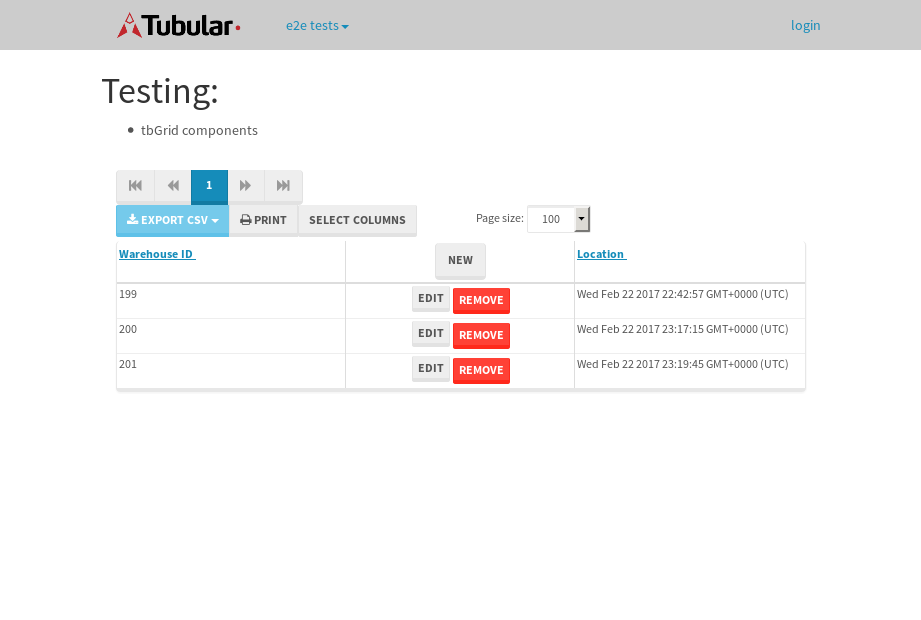

tbColumn.Grid Sorting - 27.235sTests: 5Skipped: 0Failures: 0 should sort data in ascending order then on descending order when sorting by Order Id column - 5.356sTests passed: 100.00%should order data in ascending order when click-sorting an unsorted text column - 5.097sTests passed: 100.00%should order data in descending order when click-sorting an ascending-sorted text column - 5.831sTests passed: 100.00%should order data in ascending order when click-sorting an unsorted date column - 5.412sTests passed: 100.00%should order data in descending order when click-sorting twice an unsorted date column - 5.536sTests passed: 100.00%
tbEmptyForm - 3.565sTests: 3Skipped: 0Failures: 0 should have an empty required field - 0.782sTests passed: 100.00%should not be able to click on save - 0.561sTests passed: 100.00%should load default value for numeric field - 0.56sTests passed: 100.00%
Tubular Filters.tbColumnFilter - 110.142sTests: 12Skipped: 0Failures: 0 should cancel filtering when clicking outside filter-popover - 8.924sTests passed: 100.00%should disable Value text-input for "None" filter - 6.613sTests passed: 100.00%should disable apply button for "None" filter - 7.22sTests passed: 100.00%should decorate popover button when showing data is being filtered for its column - 12.398sTests passed: 100.00%should correctly filter data for the "Equals" filtering option - 8.832sTests passed: 100.00%should correctly filter data for the "Not Equals" filtering option - 8.46sTests passed: 100.00%should correctly filter data for the "Contains" filtering option - 8.233sTests passed: 100.00%should correctly filter data for the "Not Contains" filtering option - 8.487sTests passed: 100.00%should correctly filter data for the "Starts With" filtering option - 7.063sTests passed: 100.00%should correctly filter data for the "Not Starts With" filtering option - 7.594sTests passed: 100.00%should correctly filter data for the "Ends With" filtering option - 7.069sTests passed: 100.00%should correctly filter data for the "Not Ends With" filtering option - 7.781sTests passed: 100.00%
Tubular Filters.tbColumnDateTimeFilter - 138.292sTests: 12Skipped: 0Failures: 0 should cancel filtering when clicking outside filter-popover - 7.492sTests passed: 100.00%should disable Value text-input for "None" filter - 6.974sTests passed: 100.00%should disable apply button for "None" filter - 7.008sTests passed: 100.00%should clear filtering when clicking on Clean button - 17.447sTests passed: 100.00%should decorate popover button when showing data is being filtered for its column - 11.827sTests passed: 100.00%should correctly filter data for the "Equals" filtering option - 6.843sTests passed: 100.00%should correctly filter data for the "Not Equals" filtering option - 7.417sTests passed: 100.00%should correctly filter data for the "Between" filtering option - 12.568sTests passed: 100.00%should correctly filter data for the "Greater-or-equal" filtering option - 12.542sTests passed: 100.00%should corretlly filter data for the "Greater" filtering option - 12.727sTests passed: 100.00%should correctly filter data for the "Less-or-equal" filtering option - 11.994sTests passed: 100.00%should correctly filter data for the "Less" filtering option - 12.334sTests passed: 100.00%
Tubular Filters.tbColumnOptionsFilter - 81.732sTests: 3Skipped: 0Failures: 0 should cancel filtering when clicking outside filter-popover - 8.483sTests passed: 100.00%should decorate popover button when showing data is being filtered for its column - 11.657sTests passed: 100.00%should filter column-elements in accordance to the selected filter when selecting a single option - 49.992sTests passed: 100.00%
Tubular Filters.tbTextSearch - 49.732sTests: 5Skipped: 0Failures: 0 min-chars is not set - 1.104sTests passed: 100.00%should filter data in searchable-column customer name to matching inputted text, starting from 3 characters - 6.988sTests passed: 100.00%should filter data in searchable-column shipper city to matching inputted text, starting from 3 characters - 12.358sTests passed: 100.00%should show clear button when there is inputted text only - 6.681sTests passed: 100.00%should clear filtering when clicking clear button - 17.034sTests passed: 100.00%
tbForm related components.tbCheckboxField - 6.969sTests: 2Skipped: 0Failures: 0 should save changes on "SAVE" - 3.083sTests passed: 100.00%should discard changes on "CANCEL" - 2.388sTests passed: 100.00%
tbForm related components.tbDropDownEditor - 14.003sTests: 5Skipped: 0Failures: 0 should set initial input value to the value of "value" attribute when defined - 3.342sTests passed: 100.00%should show the component name value in a label field when "showLabel" attribute is true - 2.183sTests passed: 100.00%should show a help field equal to this attribute, is present - 2.008sTests passed: 100.00%should submit modifications to item/server when clicking form "Save" - 3.183sTests passed: 100.00%should NOT submit modifications to item/server when clicking form "Cancel" - 2.378sTests passed: 100.00%
tbForm related components.tbTextArea - 17.108sTests: 7Skipped: 0Failures: 0 should set initial input value to the value of "value" attribute when defined - 1.947sTests passed: 100.00%should be invalidated when the number of chars is not in the range of "min" and "max" attributes - 2.39sTests passed: 100.00%should show the component name value in a label field when "showLabel" attribute is true - 1.996sTests passed: 100.00%should show a help field equal to this attribute, is present - 1.882sTests passed: 100.00%should require the field when the attribute "required" is true - 2.021sTests passed: 100.00%should submit modifications to item/server when clicking form "Save" - 3.514sTests passed: 100.00%should NOT submit modifications to item/server when clicking form "Cancel" - 2.668sTests passed: 100.00%
tbForm related components.tbDateEditor - 15.914sTests: 6Skipped: 0Failures: 0 should set initial date value to the value of "value" attribute when defined - 2.053sTests passed: 100.00%should be invalidated when the date is not in the range of "min" and "max" attributes - 2.731sTests passed: 100.00%should show the component name value in a label field when "showLabel" attribute is true - 1.967sTests passed: 100.00%should show a help field equal to this attribute, is present - 1.977sTests passed: 100.00%should submit modifications to item/server when clicking form "Save" - 3.047sTests passed: 100.00%should NOT submit modifications to item/server when clicking form "Cancel" - 2.767sTests passed: 100.00%
tbForm related components.tbTypeaheadEditor - 21.63sTests: 7Skipped: 0Failures: 0 should show an options list when there is an API-info/component entered-data - 2.128sTests passed: 100.00%should select the option clicked - 2.788sTests passed: 100.00%should show a "delete" button when an option/match is selected, and delete the option if button is clicked - 3.802sTests passed: 100.00%should show a label value equal to the component name when "showLabel" attribue is true - 2.056sTests passed: 100.00%should require a value when "require" attribute is true - 2.43sTests passed: 100.00%should submit modifications to item/server when clicking form "Save" - 3.421sTests passed: 100.00%should NOT submit modifications to item/server when clicking form "Cancel" - 4.376sTests passed: 100.00%
tbForm related components.tbSimpleEditor - 24.069sTests: 9Skipped: 0Failures: 0 should set initial input value to the value of "value" attribute when defined - 2.058sTests passed: 100.00%should be invalidated when the number of chars is not in the range of "min" and "max" attributes - 2.651sTests passed: 100.00%should show the component name value in a label field when "showLabel" attribute is true - 2.668sTests passed: 100.00%should set input placeholder to the value of "placeholder" attribute - 2.419sTests passed: 100.00%should validate the control using the "regex" attribute, if present - 2.201sTests passed: 100.00%should show a help field equal to this attribute, is present - 2.501sTests passed: 100.00%should require the field when the attribute "required" is true - 2.572sTests passed: 100.00%should submit modifications to item/server when clicking form "Save" - 3.385sTests passed: 100.00%should NOT submit modifications to item/server when clicking form "Cancel" - 2.74sTests passed: 100.00%
tbForm related components.tbNumericEditor - 21.306sTests: 7Skipped: 0Failures: 0 should set initial component value to the value of "value" attribute when defined - 3.252sTests passed: 100.00%should be invalidated when the entered number is not in the range of "min" and "max" attributes - 2.667sTests passed: 100.00%should show the component name value in a label field when "showLabel" attribute is true - 2.13sTests passed: 100.00%should show a help field equal to this attribute, is present - 2.178sTests passed: 100.00%should require the field when the attribute "required" is true - 3.42sTests passed: 100.00%should submit modifications to item/server when clicking form "Save" - 3.817sTests passed: 100.00%should NOT submit modifications to item/server when clicking form "Cancel" - 2.949sTests passed: 100.00%
tbForm Connection Error NoModelKey - 2.7sTests: 1Skipped: 0Failures: 0 tbForm connection error functionality - 0.637sTests passed: 100.00%
tbForm Connection Error NoServerUrl - 2.55sTests: 1Skipped: 0Failures: 0 tbForm connection error functionality - 0.5sTests passed: 100.00%
tbGridComponents - 10.227sTests: 6Skipped: 0Failures: 1 should add item with newRow method - 2.942sTests passed: 100.00%should add item with newRow method and cancel action - 1.601sTests passed: 100.00%should update item with tbSaveButton - 0.726sFailed: ElementNotVisibleError✗Tests passed: 0.00%should NOT update item on cancel Update action - 1.159sTests passed: 100.00%should remove item with tbRemoveButton - 1.381sTests passed: 100.00%should NOT remove item on cancel Remove action - 0.98sTests passed: 100.00%
tbGridPager.navigation buttons - 10.715sTests: 1Skipped: 0Failures: 0 should perform no action when clicking on the numbered navigation button corresponding to the current-showing results page - 1.73sTests passed: 100.00%
tbGridPager.navigation buttons.first/non-last results page related functionallity - 3.919sTests: 2Skipped: 0Failures: 0 should disable "first" and "previous" navigation buttons when in first results page - 1.819sTests passed: 100.00%should enable "last" and "next" navigation buttons when in a results page other than last - 2.1sTests passed: 100.00%
tbGridPager.navigation buttons.last/non-first results page related functionallity - 5.066sTests: 2Skipped: 0Failures: 0 should disable "last" and "next" navigation buttons when in last results page - 2.163sTests passed: 100.00%should enable "first" and "previous" navigation buttons when in a results page other than first - 2.903sTests passed: 100.00%
tbGridPager.page navigation - 8.958sTests: 5Skipped: 0Failures: 0 should go to next results page when clicking on next navigation button - 2.126sTests passed: 100.00%should go to previous results page when clicking on previous navigation button - 1.67sTests passed: 100.00%should go to last results page when clicking on last navigation button - 1.484sTests passed: 100.00%should go to first results page when clicking on first navigation button - 1.627sTests passed: 100.00%should go to corresponding results page when clicking on a numbered navigation button - 2.05sTests passed: 100.00%
tbGridPagerInfo - 4.371sTests: 2Skipped: 0Failures: 0 should show text in accordance to numbered of filter rows and current results-page - 1.507sTests passed: 100.00%should show count in footer - 0.56sTests passed: 100.00%
tbHttp - 19.579sTests: 8Skipped: 1Failures: 1 should be authenticated - 2.932sTests passed: 100.00%retrieve data - 3.785sTests passed: 100.00%should not login bad credentials - 2.357sExpected '' to be 'false'.✗Tests passed: 0.00%should have a refresh token - 2.777sTests passed: 100.00%should remove authentication - 2.671sTests passed: 100.00%get method-Is not authenticated - 2.418sTests passed: 100.00%post method-Is not authenticated - 2.637sTests passed: 100.00%should regenerate access token on post - 0s***Skipped***Tests passed: 0%
tbPageSizeSelctor - 15.312sTests: 4Skipped: 0Failures: 0 should filter up to 10 data rows per page when selecting a page size of "10" - 2.369sTests passed: 100.00%should filter up to 20 data rows per page when selecting a page size of "20" - 1.797sTests passed: 100.00%should filter up to 50 data rows per page when selecting a page size of "50" - 3.895sTests passed: 100.00%should filter up to 100 data rows per page when selecting a page size of "100" - 4.298sTests passed: 100.00%
tbRowSelectable - 12.007sTests: 2Skipped: 0Failures: 0 selected rows - 6.116sTests passed: 100.00%unselected rows - 4.305sTests passed: 100.00%
tbSingleForm - 20.747sTests: 8Skipped: 1Failures: 0 should load correct info - 0s***Skipped***Tests passed: 0%should change customer name - 2.511sTests passed: 100.00%should save it - 3.146sTests passed: 100.00%should clear the inputs - 3.577sTests passed: 100.00%should update - 2.616sTests passed: 100.00%should reset editor - 2.573sTests passed: 100.00%should not save if not Changes - 3.937sTests passed: 100.00%should not be able to click on save - 2.387sTests passed: 100.00%

{kind=link}